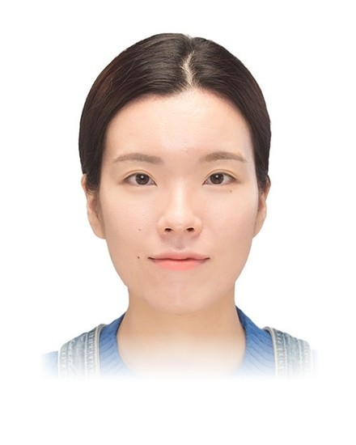
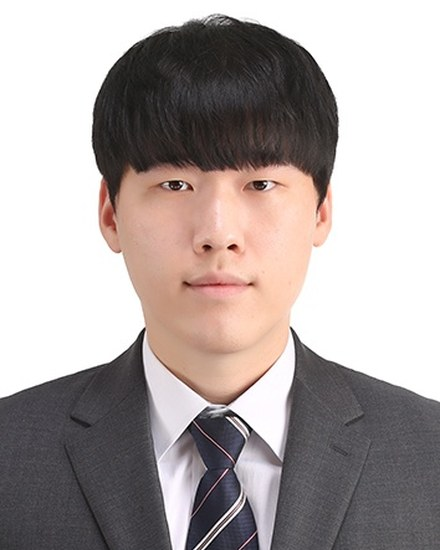

People
Principal Investigator
Current Members
Eunmi Chu
MS/PhD student
Research area: Chronic gut inflammation by colon bacteria
Email: eunmi.chu@snu.ac.kr
Jae Eun Kim
MS/PhD student
Research area: Clinical isolated Acinetobacter infection
Email: jaeeunkim@snu.ac.kr
Yerim Kim
MS/PhD student
Research area: Pathogen-host interaction in urinary tract
Email: y29135kim@snu.ac.kr
Sumin Lee
MS/PhD student
Research area: Antibiotic resistance in Acinetobacter
Email: minly6@snu.ac.kr

Min-Kyung Park
MS/PhD student
Research area: Signal transduction system in Acinetobacter
Email: raphaela522@snu.ac.kr

Ho Seok Sim, Ph.D.
Post-doctoral fellow
Research area: Acinetobacter pathogenesis and sepsis
Email: hoseok.sim@snu.ac.kr

Former Members
- Hoan Ngo, Ph.D. — Professor and Deputy Director, Institute of International Training and Cooperation, Mien Dong Innovative Technology University, Vietnam
- Jeong Moo Han, Ph.D. — Assistant Professor, Department of Food Science and Technology, Kongju National University, South Korea
- Hokyung Song, Ph.D. — Assistant Professor, Department of Environmental Engineering, Chosun University, South Korea
- Minseong Park, M.A. — Ph.D. student, College of Medicine, Seoul National University, South Korea
- Allyson Choi, B.A. — Ph.D. student, Duke-NUS Medical School, Singapore
- Bora Shin, Ph.D. — Post-doctoral fellow, Singapore National University, Singapore
- Jillian Low, B.A. — Research assistant, Duke-NUS Medical School, Singapore
- Jia Xin Yee, B.A. — Research assistant, Viromics Institute, Singapore